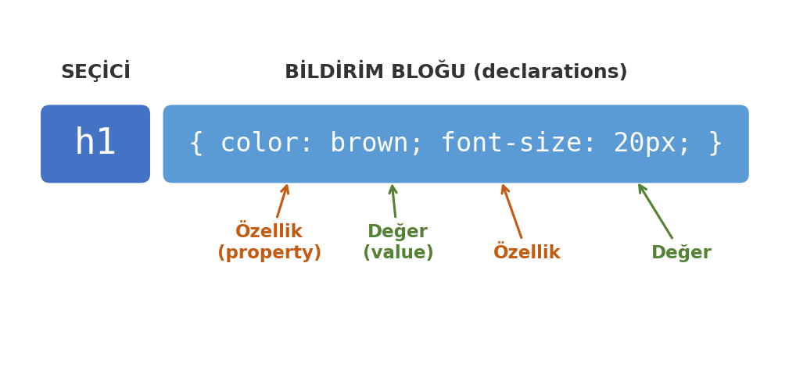
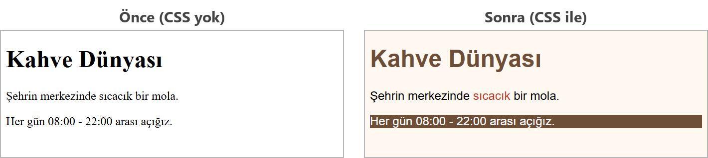

CSS'e Giriş
Bu sayfada
HTML bir sayfanın içeriğini ve iskeletini belirler; bu içeriğin rengi, yazı tipi ve düzeni ise CSS ile verilir. CSS yazılmamış bir sayfayı tarayıcı kendi varsayılan görünümüyle, beyaz zemin üzerinde siyah yazıyla gösterir.
CSS (Cascading Style Sheets, Basamaklı Stil Şablonları), HTML'in görünümünü ayrı bir yerden yönetmek için kullanılan dildir; standardını W3C belirler. Kısaca:
- HTML → içerik ve yapı (iskelet).
- CSS → görünüm (renk, yazı tipi, yerleşim).
İçeriği görünümden ayırmak, sayfayı daha düzenli tutar ve tek bir CSS dosyasıyla birçok sayfayı aynı anda biçimlendirmenizi sağlar.
1CSS Söz Dizimi
Bir CSS kuralı seçici ve bildirim bloğu olmak üzere iki bölümden oluşur. Seçici, hangi öğenin biçimlendirileceğini; süslü parantez içindeki bildirimler ise nasıl görüneceğini söyler. Her bildirim bir özellik ve bir değer çiftidir.

h1 {
color: brown;
font-size: 20px;
}
h1→ seçici (hangi öğe).color: brown;→ bir bildirim;colorözellik,browndeğer.- Her bildirim noktalı virgül (
;) ile biter; bildirimler süslü parantez{ }içine yazılır.
2CSS'i Sayfaya Bağlamanın Üç Yolu
2.1. Satır İçi (Inline) Stil
Stil, doğrudan etiketin içinde style özelliği ile yazılır. Yalnızca o tek öğeyi etkiler.
<h1 style="color: brown;">Başlık</h1>
2.2. Dahili (Internal) Stil
Stiller, <head> içindeki bir <style> bloğunda toplanır. O sayfanın tamamını etkiler.
<head>
<style>
h1 { color: brown; }
p { color: gray; }
</style>
</head>
2.3. Harici (External) Stil
Stiller ayrı bir .css dosyasına yazılır ve HTML'e <link> ile bağlanır. Birden fazla sayfa aynı dosyayı kullanabilir; bu, profesyonel çalışmada tercih edilen yöntemdir.
style.css dosyası:
h1 { color: brown; }
p { color: gray; }
index.html içinde <head>:
<head>
<link rel="stylesheet" href="style.css">
</head>
Aynı öğeye birden çok yerden stil verilirse, satır içi stil en yüksek önceliğe sahiptir. Çok sayfalı sitelerde ise harici stil tercih edilir; çünkü tek bir dosyayı değiştirerek tüm sayfaların görünümünü güncelleyebilirsiniz.
3Seçiciler: Etiket, Class ve Id
CSS'te bir öğeye üç temel yolla ulaşılır:
| Seçici türü | CSS'te yazılışı | HTML'de | Kaç öğeyi etkiler? |
|---|---|---|---|
| Etiket | p { } | <p> | O etiketten olan tüm öğeler |
| Class (sınıf) | .uyari { } | class="uyari" | Aynı sınıfı taşıyan birden çok öğe |
| Id (kimlik) | #ustbilgi { } | id="ustbilgi" | Sayfada yalnızca bir öğe |
- Class, CSS'te başına nokta (
.) konarak yazılır ve birden fazla öğede kullanılabilir (örneğin birçok "uyarı" kutusu). - Id, CSS'te başına diyez (
#) konarak yazılır ve sayfada tek bir öğeye verilir; biridaynı sayfada tekrar kullanılmamalıdır.
<head>
<style>
p { color: gray; } /* tüm paragraflar */
.uyari { color: red; } /* class="uyari" olanlar */
#ustbilgi { color: navy; } /* id="ustbilgi" olan tek öğe */
</style>
</head>
<body>
<p>Normal paragraf.</p>
<p class="uyari">Bu bir uyarıdır.</p>
<p id="ustbilgi">Üst bilgi alanı.</p>
</body>
Bir öğeye birden fazla kural uyarsa öncelik sırası id > class > etiket olur. Bu yüzden ikinci paragraf hem p hem .uyari kuralına uyduğu hâlde gri değil kırmızı, üçüncü paragraf ise lacivert görünür.
Aynı stili birden çok seçiciye vermek için seçicileri virgülle ayırabilirsiniz: h1, h2 { color: brown; } hem h1 hem h2'yi biçimlendirir.
4Temel Görünüm Özellikleri
| Özellik | Görevi | Örnek |
|---|---|---|
color | Yazı rengi | color: red; |
background-color | Arka plan rengi | background-color: #fff8f0; |
font-family | Yazı tipi | font-family: Arial, sans-serif; |
font-size | Yazı boyutu | font-size: 18px; |
text-align | Yatay hizalama | text-align: center; |
Renkleri yazmanın iki yaygın yolu:
- Renk adı:
red,blue,green,white... - HEX kodu:
#ile başlar, genellikle altı basamaklıdır:#ff0000(kırmızı),#6f4e37(kahverengi). HEX kodları, renk adlarından çok daha fazla ton verir.
5Örnek: Bir Sayfayı Renklendirme
Şimdi sade bir sayfayı CSS ile biçimlendirelim. Aşağıdaki örnekte dahili stil kullanıyoruz; etiket (body, h1), class (.vurgu) ve id (#alt-bilgi) seçicilerinin üçünü de bir arada görüyorsunuz.
<!DOCTYPE html>
<html lang="tr">
<head>
<meta charset="utf-8">
<title>Kahve Dünyası</title>
<style>
body {
background-color: #fff8f0;
font-family: Arial, sans-serif;
}
h1 {
color: #6f4e37;
}
.vurgu {
color: #c0392b;
}
#alt-bilgi {
background-color: #6f4e37;
color: white;
}
</style>
</head>
<body>
<h1>Kahve Dünyası</h1>
<p>Şehrin merkezinde <span class="vurgu">sıcacık</span> bir mola.</p>
<p id="alt-bilgi">Her gün 08:00 - 22:00 arası açığız.</p>
</body>
</html>
<span>, metnin bir parçasını satırı bölmeden işaretleyen etikettir; kendi başına görünümü değiştirmez. Burada "sıcacık" kelimesini vurgu class'ı ile biçimlendirmek için kullandık.
CSS eklenmeden önce ve eklendikten sonra sayfanın görünümü şöyle değişir:

Görüldüğü gibi içerik (yazılar) aynı kaldı; yalnızca görünüm değişti. Aynı HTML, farklı CSS ile tamamen farklı görünebilir.
6Sıkça Yapılan 6 Hata
| Hata | Sonuç | Çözüm |
|---|---|---|
Bildirim sonunda ; unutmak | O bildirim ve ardından gelen bildirim uygulanmaz | Her bildirimi ; ile bitirin |
Süslü parantezi { } kapatmamak | Sonraki kurallar uygulanmaz | Açtığınız her {'yi } ile kapatın |
Class seçicide ., id seçicide # koymamak | Seçici çalışmaz | CSS'te .sinif ve #kimlik yazın |
HTML'de class=".uyari" yazmak | Sınıf tanınmaz | HTML'de noktasız yazın: class="uyari" |
Aynı id'yi birden çok öğeye vermek | CSS ikisine de uygulanır, ama kod HTML kuralına aykırıdır ve başka yerlerde sorun çıkarır | id benzersizdir; çok kullanım için class seçin |
Harici CSS'te <link> yolunu yanlış yazmak | Stil dosyası yüklenmez | href yolunu (göreli yol) doğru yazın |
7Bu Haftanın Özeti
- CSS, sayfanın görünümünü (renk, yazı tipi, düzen) belirler; HTML içeriği, CSS görünümü yönetir.
- Bir CSS kuralı seçici { özellik: değer; } biçimindedir; her bildirim
;ile biter. - CSS üç yolla bağlanır: satır içi (
style="..."), dahili (<style>), harici (<link>ile.css). Satır içi en önceliklidir; çok sayfalı sitede harici tercih edilir. - Seçiciler: etiket (
p), class (.ad, birden çok öğe), id (#ad, tek öğe). - Temel özellikler:
color,background-color,font-family,font-size,text-align. Renkler ad (red) veya HEX (#ff0000) ile yazılır. - Aynı HTML, farklı CSS ile tamamen farklı görünebilir.
8Konu Sonu Testi
-
h1 { color: red; }kuralındacolorneyi ifade eder?- a) Seçiciyi
- b) Değeri
- c) Özelliği
- d) Etiketi
Cevabı göster
ccolorbir özelliktir;redise onun değeridir. -
Harici (external) bir CSS dosyası HTML'e hangi etiketle bağlanır?
- a)
<style> - b)
<link> - c)
<css> - d)
<script>
Cevabı göster
bHarici CSS<link rel="stylesheet" href="...">ile bağlanır. - a)
-
Bir class seçici CSS'te hangi işaretle başlar?
- a)
# - b)
. - c)
@ - d)
*
Cevabı göster
bClass seçici CSS'te nokta (.) ile yazılır. - a)
-
Sayfada yalnızca bir öğeye verilmesi gereken seçici hangisidir?
- a) Etiket seçici
- b) Class seçici
- c) Id seçici
- d) Grup seçici
Cevabı göster
cidbenzersizdir; sayfada bir kez kullanılır. -
Aşağıdakilerden hangisi geçerli bir HEX renk kodudur?
- a)
red-color - b)
#ff0000 - c)
renk(255) - d)
color:red
Cevabı göster
bHEX kodları#ile başlar ve genellikle altı basamaklıdır (#ff0000). - a)
9Kendinizi Deneyin
Cevabınızı önce kendiniz yazın (defterinize ya da VS Code'da bir dosyaya), sonra cevapla karşılaştırın. Kod okuma ve hata bulma sorularında cevabınızı tarayıcıda deneyerek de kontrol edebilirsiniz.
1. (Kavram) CSS'i sayfaya eklemenin üç yolu nedir? Hangisi neden önerilir?
Cevabı göster
(1) Satır içi: etiketin style özelliğine yazılır. (2) Dahili: <head> içindeki <style> etiketine yazılır. (3) Harici: ayrı bir .css dosyasına yazılıp <link> ile bağlanır. Harici CSS önerilir, çünkü tek dosyayla bütün sayfaların görünümü yönetilir; bir değişiklik her sayfaya birden uygulanır ve HTML ile CSS birbirinden ayrı durur.
2. (Kavram) class ile id arasındaki fark nedir? CSS'te her biri nasıl seçilir?
Cevabı göster
class aynı sayfada birden çok öğeye verilebilir; CSS'te nokta ile seçilir: .uyari { }. id sayfada yalnızca bir öğeye verilir; CSS'te diyez ile seçilir: #baslik { }.
3. (Kod okuma) Aşağıdaki üç paragraf hangi renkte görünür? Nedenini açıklayın.
<style>
p { color: gray; }
.uyari { color: red; }
#baslik { color: navy; }
</style>
<p>Birinci</p>
<p class="uyari">İkinci</p>
<p id="baslik" class="uyari">Üçüncü</p>
Cevabı göster
Birinci gri, ikinci kırmızı, üçüncü lacivert görünür. Bir öğeye birden fazla kural uyduğunda öncelik sırası id > class > etiket'tir. İkinci paragrafa hem p hem .uyari uyar, class kazanır. Üçüncüye üç kural da uyar, id kazanır.
4. (Hata bulma) Aşağıdaki kodda beş hata var. Bulun ve düzeltin.
body {
background-color: f5f5f5;
font-size: 16;
color: blue
text-align: center;
}
.baslik {
colour: red;
}
<h1 class=".baslik">Merhaba</h1>
Cevabı göster
- HEX renkte
#yok. Doğrusu:#f5f5f5 - Yazı boyutunda birim yok. Doğrusu:
16px color: bluesatırının sonunda;yok; bu yüzden hem bu satır hem de sonrakitext-alignçalışmaz.- Özellik adı yanlış yazılmış. Doğrusu:
color - HTML'de class adı noktasız yazılır. Doğrusu:
class="baslik"
5. (Kod yazma) style.css adlı harici dosyaya şu kuralları yazın: sayfanın arka planı #eeeeee, yazı tipi Arial (yoksa tırnaksız herhangi bir yazı tipi); h1 başlıkları ortalı ve lacivert. Ardından bu dosyayı HTML sayfasına bağlayan satırı ve nereye yazılacağını belirtin.
Cevabı göster
body {
background-color: #eeeeee;
font-family: Arial, sans-serif;
}
h1 {
text-align: center;
color: navy;
}
HTML'de <head> içine: <link rel="stylesheet" href="style.css">
10Uygulamalar
Görev: Bir sayfada dahili CSS kullanarak body arka planını, h1 rengini, bir class ve bir id seçicisini biçimlendirin.
Çözüm:
<!DOCTYPE html>
<html lang="tr">
<head>
<meta charset="utf-8">
<title>Renkli Sayfam</title>
<style>
body {
background-color: #eaf4fb;
font-family: Arial, sans-serif;
}
h1 {
color: #1f6feb;
text-align: center;
}
.onemli {
color: #c0392b;
}
#not {
background-color: #fff3cd;
}
</style>
</head>
<body>
<h1>Web Tasarımı Notlarım</h1>
<p>Bu ders <span class="onemli">çok önemli</span> bir temel oluşturur.</p>
<p id="not">Not: Her hafta uygulama yapmayı unutmayın.</p>
</body>
</html>
Adımlar:
web_sitemklasöründe yeni bir.htmldosyası oluşturun.- Yukarıdaki kodu yazıp kaydedin (
Ctrl+S). - Go Live ile açın; renklerin, hizalamanın ve arka planların uygulandığını gözlemleyin.
11Sınıf Uygulaması
Senaryo: 2-5. haftalarda yaptığınız sade bir sayfayı, harici CSS kullanarak renklendirin ve biçimlendirin.
Yapılacaklar:
- 2. haftada, HTML İskeleti ve Metin Etiketleri konusunda yaptığınız tanıtım sayfanızı (
tanitim.html) ya da yeni bir sayfa açın. - Aynı klasörde
style.cssadında bir dosya oluşturun ve HTML'e<link>ile bağlayın. - CSS'te
body'ye bir arka plan rengi ve bir yazı tipi (font-family) verin. h1için bir renk belirleyin.- Bir class (örn.
.vurgu) tanımlayıp bir metne uygulayın. - Bir id (örn.
#altbilgi) tanımlayıp bir öğeye uygulayın.
Beklenen sonuç: Sayfa artık renkli ve kendi yazı tipiyle görünüyor; bir metin .vurgu sınıfıyla öne çıkmış; bir öğe #altbilgi id'siyle biçimlendirilmiş. Tüm stiller ayrı dosyada.
İpuçları: CSS'te class için ., id için # kullanın; HTML'de class="vurgu" (noktasız) yazın. <link>'in href yolunu doğru verin.
12Notlar ve İpuçları
- VS Code, CSS dosyasındaki renklerin yanında küçük bir renk kutusu gösterir. Kutuya tıklayınca renk paleti açılır; rengi oradan seçebilirsiniz.
- Bir öğeye birden fazla class verilebilir; adlar boşlukla ayrılır:
class="kutu uyari". Bu yüzden bir class adının içinde boşluk olamaz. #fffgibi üç basamaklı HEX kodları da vardır; her basamak iki kez yazılmış sayılır (#fff=#ffffff).
13Çalışma Soruları
Soruları 2. haftada, HTML İskeleti ve Metin Etiketleri konusunda hazırladığınız tanitim.html sayfası üzerinde yapın.
<head>içine bir<style>ekleyerekh1rengini değiştirin.bodyiçin birbackground-colorve birfont-familybelirleyin.- Bir paragrafa
class="onemli"verip CSS'te.onemlisınıfını kırmızı yapın. - Bir öğeye
idverip#seçicisiyle arka plan rengini değiştirin. - Bir rengi önce adıyla (
red), sonra HEX koduyla (#ff0000) yazıp aynı sonucu verdiğini gözlemleyin. - Stillerinizi ayrı bir
style.cssdosyasına taşıyıp<link>ile bağlayarak harici stile çevirin.
Kaynakça
- MDN: What is CSS? (İngilizce)
- MDN: Basic CSS selectors (İngilizce)
- MDN:
<hex-color>(İngilizce) - CSS in Visual Studio Code (İngilizce)
Bu haftanın Sınıf Uygulaması sayfanın sonundadır. Önce konu anlatımını okuyun, sonra uygulamayı kendi bilgisayarınızda yapın.